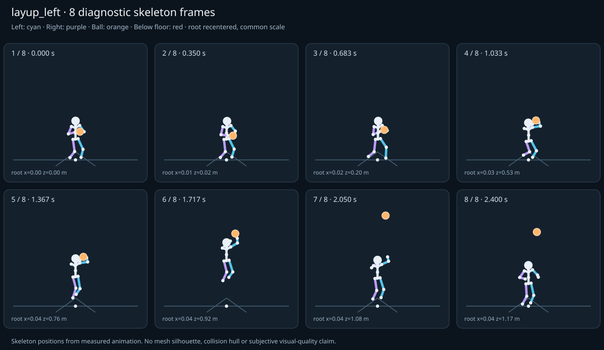

מה הוריד את הציון
- קפיצות פוזה: LeftHand בזמן 1.3333 ש׳; קפיצת סיבוב שקולה 17.1804 מעלות ב־60Hz (צהוב)
- כניסה ויציאה מול המתנה: פער ב־כניסה מול המתנה; יחס חריגה 2.1649 (צהוב)
כיסוי: 100%. לא כל מדד חל על כל קליפ; הסטטוס והראיות מפורטים למטה.
שמונה פריימים
תצוגת שלד אבחונית שנבנתה מהפריימים הנמדדים. צד שמאל בכחול, ימין בסגול, כדור בכתום. מיקום השורש ממורכז לצפייה; מיקומו בעולם כתוב בכל פריים.

המדדים והראיות
| מדד | מצב | ערך | ציון | סף ופרטי מדידה |
|---|---|---|---|---|
| החלקת רגליים | ירוק | 0 height ratio | 99 | {
"definition": {
"label": "החלקת רגליים",
"unit": "height ratio",
"green": 0.01,
"yellow": 0.035,
"weight": 18,
"description": "Maximum horizontal sole displacement from the first sample of each declared support window, divided by character height. Inferred support is used only when no windows were supplied."
},
"value": 0.000398,
"status": "green",
"score": 99.2,
"evidence": {
"coordinateSpace": "authored reference world (simulation-owned)",
"supportSource": "declared",
"windows": 6,
"samples": 150,
"maxDriftMeters": 0.000672,
"p95SpeedMetersPerSecond": 0.03141,
"worst": {
"bone": "RightFoot",
"t": 2.183333,
"start": 2.1,
"end": 2.4,
"driftMeters": 0.000672
}
}
} |
| חדירה לרצפה | ירוק | 0.001 height ratio | 97 | {
"definition": {
"label": "חדירה לרצפה",
"unit": "height ratio",
"green": 0.005,
"yellow": 0.02,
"weight": 15,
"description": "Maximum depth of the supplied sole probe points and all skeletal joint centers below the declared floor plane, divided by height. Sole probes are not a mesh collision audit."
},
"value": 0.000668,
"status": "green",
"score": 97.33,
"evidence": {
"samples": 2960,
"floorY": 0,
"probeKind": "declared sole probes plus skeletal joint centers (no mesh surfaces)",
"maxDepthMeters": 0.001128,
"worst": {
"t": 2.35,
"bone": "RightFoot",
"depthMeters": 0.001128,
"y": -0.001128
}
}
} |
| קפיצות פוזה | צהוב | 1.216 discontinuity ratio | 76 | {
"definition": {
"label": "קפיצות פוזה",
"unit": "discontinuity ratio",
"green": 1,
"yellow": 2.5,
"weight": 18,
"description": "Maximum adjacent 60 Hz-equivalent step: root-relative marker displacement / 0.04 height, root-relative rotation / 15 degrees, or root translation / 0.08 height. A fast continuous action can also exceed this screening threshold."
},
"value": 1.215476,
"status": "yellow",
"score": 75.69,
"evidence": {
"adjacentPairs": 147,
"observations": 2499,
"maxDegrees60Hz": 17.180358,
"maxMarkerStepHeight60Hz": 0.048619,
"maxRootStepHeight60Hz": 0.010652,
"worst": {
"ratio": 1.2154759716360015,
"t": 1.333333,
"previousTime": 1.316667,
"bone": "LeftHand",
"markerStepHeight60Hz": 0.048619,
"degrees60Hz": 7.48619
}
}
} |
| חריגות אנטומיות | ירוק | 0 % affected frames | 100 | {
"definition": {
"label": "חריגות אנטומיות",
"unit": "% affected frames",
"green": 0.5,
"yellow": 3,
"weight": 14,
"description": "Percentage of frames with elbow or knee flexion above 165 degrees, neck bend above 80 degrees, or a segment length changing by more than 5%. Optional calibrated hinge checks detect reverse knee flexion above 8 degrees. Conservative marker limits do not diagnose axial joint twist."
},
"value": 0,
"status": "green",
"score": 100,
"evidence": {
"testedFrames": 148,
"affectedFrames": 0,
"checks": 2516,
"maxLimbFlexionDegrees": 129.164005,
"maxRelativeSegmentLengthChange": 0,
"hingeDirectionChecked": true,
"axialTwistChecked": false,
"violations": []
}
} |
| מגע בכדור | ירוק | 0.001 height ratio | 99 | {
"definition": {
"label": "מגע בכדור",
"unit": "height ratio",
"green": 0.015,
"yellow": 0.05,
"weight": 13,
"description": "Maximum absolute distance from the ball surface to the sampled, bone-transformed declared contact point, divided by height. Events are evaluated at their exact declared times by interpolation."
},
"value": 0.000471,
"status": "green",
"score": 99.37,
"evidence": {
"radiusMeters": 0.12,
"samples": 204,
"missed": [],
"contacts": [
{
"t": 0.783333,
"bone": "RightHand",
"gapMeters": 0.000796,
"signedGapMeters": -0.000796,
"centerDistanceMeters": 0.119204,
"contactPoint": [
0.011095,
1.167185,
0.562808
],
"ballCenter": [
0.129167,
1.179072,
0.574095
],
"declaredLocalPoint": true
},
{
"t": 1.683333,
"bone": "LeftHand",
"gapMeters": 0.000538,
"signedGapMeters": 0.000538,
"centerDistanceMeters": 0.120538,
"contactPoint": [
0.316354,
2.343701,
1.238712
],
"ballCenter": [
0.206739,
2.381425,
1.205682
],
"declaredLocalPoint": true
},
{
"t": 1.216667,
"bone": "RightHand",
"gapMeters": 0.000465,
"signedGapMeters": -0.000465,
"centerDistanceMeters": 0.119535,
"contactPoint": [
0.048928,
1.35956,
0.957163
],
"ballCenter": [
0.16544,
1.384282,
0.967279
],
"declaredLocalPoint": true
},
{
"t": 1.25,
"bone": "RightHand",
"gapMeters": 0.000391,
"signedGapMeters": -0.000391,
"centerDistanceMeters": 0.119609,
"contactPoint": [
0.05019,
1.367633,
0.976169
],
"ballCenter": [
0.166768,
1.3923,
0.986532
],
"declaredLocalPoint": true
},
{
"t": 1.483333,
"bone": "RightHand",
"gapMeters": 0.000385,
"signedGapMeters": -0.000385,
"centerDistanceMeters": 0.119615,
"contactPoint": [
0.075939,
2.084273,
1.098368
],
"ballCenter": [
0.192565,
2.108808,
1.108574
],
"declaredLocalPoint": true
},
{
"t": 1.516667,
"bone": "RightHand",
"gapMeters": 0.000379,
"signedGapMeters": -0.000379,
"centerDistanceMeters": 0.119621,
"contactPoint": [
0.07981,
2.174742,
1.115665
],
"ballCenter": [
0.196451,
2.199205,
1.125934
],
"declaredLocalPoint": true
},
{
"t": 1.316667,
"bone": "LeftHand",
"gapMeters": 0.00036,
"signedGapMeters": 0.00036,
"centerDistanceMeters": 0.12036,
"contactPoint": [
0.281085,
1.447025,
1.052078
],
"ballCenter": [
0.171642,
1.486326,
1.021029
],
"declaredLocalPoint": true
},
{
"t": 0.683333,
"bone": "RightHand",
"gapMeters": 0.000358,
"signedGapMeters": -0.000358,
"centerDistanceMeters": 0.119642,
"contactPoint": [
-0.006071,
1.060332,
0.486522
],
"ballCenter": [
0.113057,
1.060127,
0.497602
],
"declaredLocalPoint": true
},
{
"t": 1.45,
"bone": "RightHand",
"gapMeters": 0.000343,
"signedGapMeters": -0.000343,
"centerDistanceMeters": 0.119657,
"contactPoint": [
0.071586,
1.980192,
1.080789
],
"ballCenter": [
0.188244,
2.004778,
1.090997
],
"declaredLocalPoint": true
},
{
"t": 1.45,
"bone": "LeftHand",
"gapMeters": 0.000311,
"signedGapMeters": 0.000311,
"centerDistanceMeters": 0.120311,
"contactPoint": [
0.297789,
1.965432,
1.121435
],
"ballCenter": [
0.188244,
2.004778,
1.090997
],
"declaredLocalPoint": true
},
{
"t": 1.416667,
"bone": "LeftHand",
"gapMeters": 0.000299,
"signedGapMeters": 0.000299,
"centerDistanceMeters": 0.120299,
"contactPoint": [
0.293249,
1.849351,
1.103719
],
"ballCenter": [
0.183733,
1.888775,
1.073325
],
"declaredLocalPoint": true
},
{
"t": 0.583333,
"bone": "RightHand",
"gapMeters": 0.000299,
"signedGapMeters": -0.000299,
"centerDistanceMeters": 0.119701,
"contactPoint": [
-0.020825,
0.947126,
0.418963
],
"ballCenter": [
0.098328,
0.947033,
0.430408
],
"declaredLocalPoint": true
},
{
"t": 0.816667,
"bone": "LeftHand",
"gapMeters": 0.00028,
"signedGapMeters": 0.00028,
"centerDistanceMeters": 0.12028,
"contactPoint": [
0.253519,
1.215013,
0.583741
],
"ballCenter": [
0.134457,
1.214793,
0.600814
],
"declaredLocalPoint": true
},
{
"t": 1.483333,
"bone": "LeftHand",
"gapMeters": 0.000268,
"signedGapMeters": 0.000268,
"centerDistanceMeters": 0.120268,
"contactPoint": [
0.302106,
2.069557,
1.138983
],
"ballCenter": [
0.192565,
2.108808,
1.108574
],
"declaredLocalPoint": true
},
{
"t": 0.983333,
"bone": "RightHand",
"gapMeters": 0.000265,
"signedGapMeters": -0.000265,
"centerDistanceMeters": 0.119735,
"contactPoint": [
0.039365,
1.323377,
0.748554
],
"ballCenter": [
0.156089,
1.347967,
0.758921
],
"declaredLocalPoint": true
},
{
"t": 1.016667,
"bone": "RightHand",
"gapMeters": 0.000265,
"signedGapMeters": -0.000265,
"centerDistanceMeters": 0.119735,
"contactPoint": [
0.042103,
1.337491,
0.783292
],
"ballCenter": [
0.158837,
1.361961,
0.793819
],
"declaredLocalPoint": true
},
{
"t": 1.416667,
"bone": "RightHand",
"gapMeters": 0.000252,
"signedGapMeters": -0.000252,
"centerDistanceMeters": 0.119748,
"contactPoint": [
0.06699,
1.864193,
1.063014
],
"ballCenter": [
0.183733,
1.888775,
1.073325
],
"declaredLocalPoint": true
},
{
"t": 1.65,
"bone": "LeftHand",
"gapMeters": 0.000244,
"signedGapMeters": 0.000244,
"centerDistanceMeters": 0.120244,
"contactPoint": [
0.3166,
2.31727,
1.220441
],
"ballCenter": [
0.20716,
2.356346,
1.189546
],
"declaredLocalPoint": true
},
{
"t": 0.95,
"bone": "RightHand",
"gapMeters": 0.000231,
"signedGapMeters": -0.000231,
"centerDistanceMeters": 0.119769,
"contactPoint": [
0.035972,
1.304658,
0.71413
],
"ballCenter": [
0.152724,
1.329331,
0.72436
],
"declaredLocalPoint": true
},
{
"t": 0.216667,
"bone": "LeftHand",
"gapMeters": 0.000215,
"signedGapMeters": -0.000215,
"centerDistanceMeters": 0.119785,
"contactPoint": [
0.16904,
0.92718,
0.293861
],
"ballCenter": [
0.050535,
0.927175,
0.311326
],
"declaredLocalPoint": true
}
],
"contactDetailsTruncated": true,
"coordinateSpace": "authored reference world (simulation-owned)"
}
} |
| כניסה ויציאה מול המתנה | צהוב | 2.165 continuity ratio | 63 | {
"definition": {
"label": "כניסה ויציאה מול המתנה",
"unit": "continuity ratio",
"green": 1,
"yellow": 3,
"weight": 10,
"description": "Worst entry/exit mismatch to the best matching idle phase: RMS marker error / 0.04 height, RMS bone rotation / 25 degrees, or RMS endpoint velocity error / 0.75 height per second. Horizontal root translation is aligned; root height and body pose remain measurable."
},
"value": 2.164886,
"status": "yellow",
"score": 62.53,
"evidence": {
"entry": {
"ratio": 2.1648857538283646,
"t": 0,
"idleTime": 2.133333,
"markers": 17,
"rmsPositionHeight": 0.06676,
"rmsRotationDegrees": 54.122144,
"rmsVelocityHeightPerSecond": 0.007163,
"velocityEvaluated": true
},
"exit": {
"ratio": 2.083752730937089,
"t": 2.4,
"idleTime": 1.966667,
"markers": 17,
"rmsPositionHeight": 0.054505,
"rmsRotationDegrees": 52.093818,
"rmsVelocityHeightPerSecond": 0.2159,
"velocityEvaluated": true
},
"worstEndpoint": "entry",
"alignment": "horizontal root translation; raw asset poses used when provided"
}
} |
| מהירות גוף מול צעדים | לא חל | — relative speed error | — | {
"definition": {
"label": "מהירות גוף מול צעדים",
"unit": "relative speed error",
"green": 0.2,
"yellow": 0.5,
"weight": 8,
"description": "Relative difference between average root travel speed and the median backward support-foot sweep speed relative to the root. Cadence and implied stride lengths are also reported. In-place clips need an explicit reference travel scenario; stationary actions are not scored as locomotion."
},
"value": null,
"status": "not-applicable",
"score": null,
"reason": "This action is not declared locomotion.",
"evidence": {}
} |
| סימטריה | ירוק | 0.021 relative mismatch | 86 | {
"definition": {
"label": "סימטריה",
"unit": "relative mismatch",
"green": 0.03,
"yellow": 0.1,
"weight": 4,
"description": "Maximum bilateral segment-length mismatch. Looping locomotion additionally compares reflected half-cycle leg markers; explicit pose symmetry compares simultaneous bilateral markers. One-sided actions retain unscored motion diagnostics, so a valid kick or dribble arm is not penalized for intentional asymmetry."
},
"value": 0.021129,
"status": "green",
"score": 85.91,
"evidence": {
"mode": "mirrored clip pair",
"modeSource": "structural default for intentional asymmetry",
"structuralMismatch": 0,
"segments": [
{
"segment": "Arm-ForeArm",
"mismatch": 0
},
{
"segment": "ForeArm-Hand",
"mismatch": 0
},
{
"segment": "UpLeg-Leg",
"mismatch": 0
},
{
"segment": "Leg-Foot",
"mismatch": 0
}
],
"motionRmsHeight": 0.021129,
"worstMotion": {
"t": 0.3,
"errorHeight": 0.046436
},
"bilateralPoseRmsHeightUnscored": 0.105426,
"note": "One-sided authored actions are checked for structural symmetry only."
}
} |